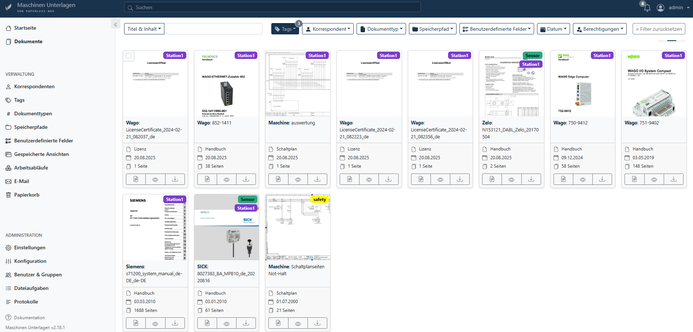
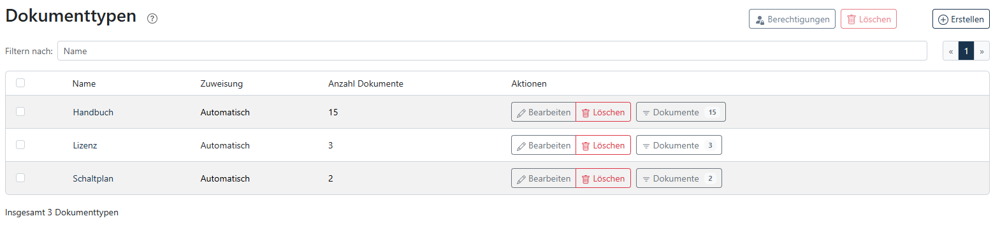

Zusätzlich biete ich Ihnen auch die umfassende Dokumentation bestehender Anlagen an, beispielsweise im Rahmen von Retrofits, für die Instandhaltung oder zur nachträglichen Anlagenbewertung. In enger zusammenarbeit können wahlweise folgende Leistungen in Anspruch genommen werden.
Die Dokumentation wird digital zur verfügung gestellt, auf Wunsch kann auch eine Datenbank mit allen nötigen Dokumenten an der Maschine hinterlegt werden. In weiteren Schritten kann auch eine KI-Modell auf diese Unterlagen trainiert werden und ihr Servicepersonal bei der Fehlersuche unterstützen.
So schaffen Sie klare Strukturen, erhöhen die Betriebssicherheit und erleichtern die Arbeit für Wartung und Servicepersonal.
 